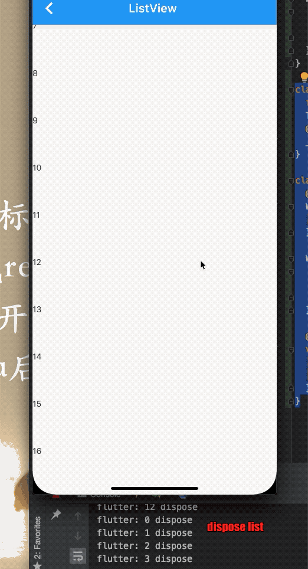
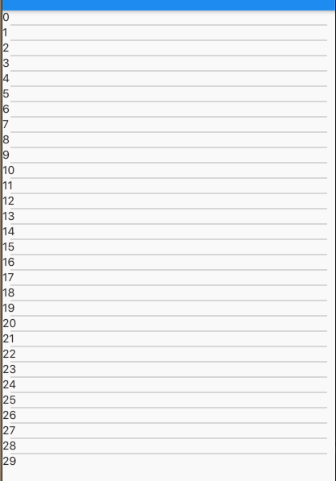
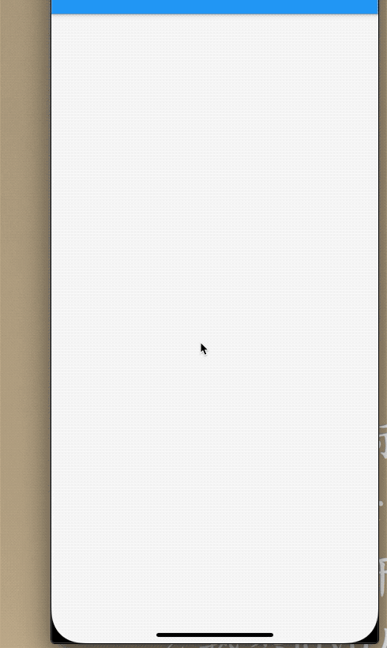
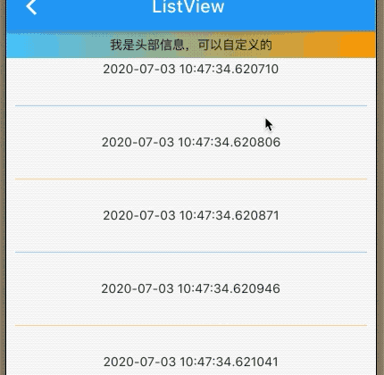

6.3 Listview
ListView和iOS TableView一样，可以滚动和延迟加载的长列表。性能高。
ListView({
Axis scrollDirection = Axis.vertical,
bool reverse = false,
ScrollController controller,
bool primary,
ScrollPhysics physics,
bool shrinkWrap = false,
this.itemExtent,
bool addAutomaticKeepAlives = true,
bool addRepaintBoundaries = true,
bool addSemanticIndexes = true,
double cacheExtent,
List<Widget> children = const <Widget>[],
int semanticChildCount,
DragStartBehavior dragStartBehavior = DragStartBehavior.start,
ScrollViewKeyboardDismissBehavior keyboardDismissBehavior = ScrollViewKeyboardDismissBehavior.manual,
})
shrinkWrap: 是否根据itemCount来计算子控件数量itemExtent: 如果设置，则护士子控件大小，强制设置的数值。addAutomaticKeepAlives: 是否自动保存状态，默认是true.当为true,子部件使用AutomaticKeepAlive来包裹，当子部件划出屏幕它也不会被回收，它使用KeepAliveNotification来保存状态。如果用户自己管理状态则设置为falseaddRepaintBoundaries:是否被RepaintBoundary包裹， 通常。将滚动容器内的子级包裹在RepaintBoundary，因此列表在滚动时不需要重绘。如果子级易于重绘(如 纯色快、文本片段)，不添加重绘边界可能会更有效，并在滚动中简单的重绘子级。addSemanticIndexes: 是否在IndexedSemantics包裹每个子部件，平时滚动时子部件不许使用语义索引已生成正确的索引仅仅在IndexedChildSemantics小部件提供的时候。
上边几个属性是ListView共同所有，他们效果一样的
默认构造函数
默认的构造函数有childdren参数，它接受一个Widget数组。这种方式适合少量子部件，因为这种方式，会一次性创建所有子部件，而不是懒加载(当使用的时候再创建)，导致性能低下，也就是默认构造函数的ListView没有使用Sliver的懒加载模型的，实际这种问题和SingleChildScrollView+Column的方式本质一样。
例子：
Widget _body() {
List<Widget> list = new List();
for (int i = 0; i < 30; i++) {
list.add(Card(
child: Container(
height: 40,
width: MediaQuery.of(context).size.width,
alignment: Alignment.center,
child: Text('$i'),
),
));
}
return ListView(
itemExtent: 80,
shrinkWrap: false,
addAutomaticKeepAlives: true,
children: list,
addSemanticIndexes: true,
cacheExtent: 50,
);
}
}
次方式使用组件少的情况下，否则可能会卡
ListView.build
ListView.build适合列表较多或无线的情况，因为只有子组件真正显示才被创建，性能更好。
ListView.builder({
...
@required IndexedWidgetBuilder itemBuilder,
int itemCount,
...
})
IndexedWidgetBuilder子部件创建函数，当子部件将要显示调用该函数。itemCount子部件数量，不设置则为无限大。当子部件滚动除屏幕则会被销毁。
Widget _body2() {
return ListView.builder(
itemExtent: 80,
itemBuilder: _buildCell,
);
}
Widget _buildCell(ctx, int index) {
return TestContainer(
title: index.toString(),
);
}
class TestContainer extends StatefulWidget {
final String title;
TestContainer({Key key, this.title}) : super(key: key);
@override
_TestContainerState createState() => _TestContainerState();
}
class _TestContainerState extends State<TestContainer> {
@override
Widget build(BuildContext context) {
return _body();
}
Widget _body() {
return Container(
child: Text(widget.title ?? '123'),
);
}
@override
void dispose() {
print(widget.title + ' dispose');
super.dispose();
}
}

ListView.separated
ListView.separated是可以在列表子部件中间生成分隔子部件，参数separatorBuilder是分隔回调函数，原理和上面的itemBuilder一致。
例子：每行的下边添加一个分割线，颜色为灰色。
Widget _body3() {
return ListView.separated(
itemBuilder: _buildCell,
separatorBuilder: _buildSeparatedCell,
itemCount: 30,
);
}
Widget _buildCell(ctx, int index) {
return TestContainer(
title: index.toString(),
);
}
Widget _buildSeparatedCell(ctx, int index) {
return Divider(
height: 2,
thickness: 0.5,
indent: 10,
endIndent: 10,
color: Colors.black45,
);
}

加载更多数据
代码比较简单，一次性加载10条数据，加载到50条数据，停止加载。
代码：
Widget _body3() {
return ListView.separated(
itemBuilder: _buildCell,
separatorBuilder: _buildSeparatedCell,
itemCount: list.length,
);
}
Widget _buildCell(ctx, int index) {
if (index < list.length - 1) {
return Container(
height: 40,
alignment: Alignment.center,
child: TestContainer(
title: list[index],
),
);
} else if (list.length >= 50) {
return Container(
alignment: Alignment.center,
height: 30,
child: Row(
mainAxisAlignment: MainAxisAlignment.center,
children: <Widget>[Icon(Icons.done), Text('没有更多数据了')],
),
);
} else {
_getMoreData(); //加载数据
return Container(
alignment: Alignment.center,
child: RefreshProgressIndicator(),
);
}
}
Widget _buildSeparatedCell(ctx, int index) {
return Divider(
height: 2,
thickness: 0.5,
indent: 10,
endIndent: 10,
color: index % 2 == 0 ? Colors.blue : Colors.orange,
);
}
List<String> list;
@override
void initState() {
list = new List();
_getMoreData();
super.initState();
}
void _getMoreData() async {
await Future.delayed(Duration(milliseconds: 2000));
for (int i = 0; i < 10; i++) {
list.add(DateTime.now().toString());
}
setState(() {});
}
@override
Widget build(BuildContext context) {
return Scaffold(
appBar: AppBar(
title: Text('ListView '),
),
body: _body3(),
);
}
效果：

固定头部信息
平时开发有需求固定头部关键信息，只刷新底部数据的 时候，那么我们来实现一个。
Widget _body4() {
return Column(
children: <Widget>[
Container(
height: 30,
width: MediaQuery.of(context).size.width,
alignment: Alignment.center,
decoration: BoxDecoration(
gradient: LinearGradient(
colors: [Colors.lightBlueAccent, Colors.orange])),
child: Text('我是头部信息，可以自定义的'),
),
Expanded(
child: ListView.separated(
itemBuilder: _buildCell,
separatorBuilder: _buildSeparatedCell,
itemCount: list.length,
),
)
],
);
}

总结
ListView是一个性能高的滚动列表，长列表首先考虑该部件，不同的构造函数应对了不同的模型，还有更多的便捷构造函数，感兴趣的同学可以看下官方文档。